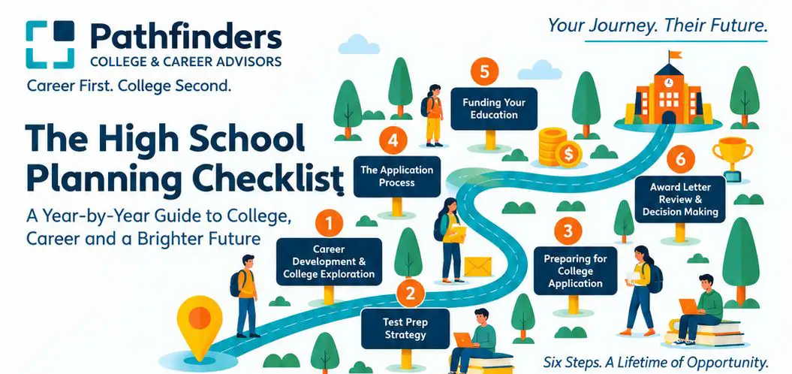

High school goes by faster than most families expect. Four years feels like plenty of time until suddenly it’s junior year, college application deadlines are approaching, and there’s a growing sense that something important was missed along the way.
The families who navigate high school most successfully are usually the ones who started thinking about the bigger picture early – not because they had everything figured out, but because they were asking the right questions at the right time.
At Pathfinders College & Career Advisors, we believe the college and career planning process works best when it’s approached as a progression rather than a last-minute sprint. This checklist outlines what students and families should be thinking about at each stage of high school – not to create pressure, but to create clarity.
A Grade-by-Grade High School Planning Checklist
| Grade | Key Focus Areas |
|---|---|
| Freshman Year (Grade 9) | Start exploring interests and strengths through classes, clubs, and activities. Focus on building strong study habits and a solid GPA from the start. Take a career interest or personality assessment to begin thinking about possible directions. Understand what courses your high school requires and what electives are available. Talk to your family about college and career planning so everyone is on the same page. |
| Sophomore Year (Grade 10) | Begin researching different career paths that align with your interests and strengths. Look into whether the careers you’re considering require a college degree – and if so, what type. Start building your extracurricular profile intentionally (depth matters more than quantity). Consider taking the PSAT for practice and exposure. Begin a basic list of colleges that seem interesting – this will evolve, but getting started builds awareness. |
| Junior Year (Grade 11) | This is the most important planning year. Take the SAT and/or ACT – consider taking diagnostics for both first to see which fits better. Research colleges seriously: visit campuses if possible, attend college fairs, connect with admissions offices. Investigate merit scholarship opportunities at schools of interest and understand what scores or GPAs are required. Start drafting your college list with a balance of reach, match, and likely schools. Begin thinking about your personal statement and what story you want to tell. |
| Senior Year (Grade 12) | Finalize your college list and application strategy (Early Decision, Early Action, Regular Decision). Complete and submit applications – stay organized with deadlines for each school. Complete the FAFSA and CSS Profile if applicable as soon as they open. Compare financial aid and scholarship offers carefully before committing. Make your final college decision by May 1 National Candidates Reply Date. Celebrate – and prepare for the transition to college life. |

Want This Checklist as a Printable PDF?
Download the full grade-by-grade High School Planning Checklist and keep it handy all four years.
Get My Free Checklist →Beyond the Checklist: The Pathfinders Learning Journey
A checklist is a useful tool, but it’s not a strategy. Knowing that a junior should “research colleges seriously” doesn’t tell a family how to research colleges, which factors matter most, or how to connect that research to the student’s actual goals and financial situation.
That’s where working with an advisor makes a meaningful difference. At Pathfinders, our process follows a structured progression that we call the Pathfinders Learning Journey:
- Career Exploration – We start by helping students identify careers that genuinely fit their interests, abilities, values, and goals. This comes first because the right career direction shapes every subsequent decision.
- Education Planning – Once we understand the career direction, we help families determine what kind of education is actually required to get there. Not every career path requires a four-year degree. Not every major leads where families assume it does.
- College Research and Selection – We help families build a balanced, strategic college list based on academic fit, program quality, location, campus culture, and cost – not just rankings.
- Financial Strategy – We help families understand the real cost of each option, identify merit scholarship opportunities, evaluate financial aid offers, and make a decision that makes sense for the whole family’s financial picture.
- Testing Strategy – We help families determine whether standardized testing is worth investing in for their specific situation, which test to prioritize, and how test scores interact with scholarship eligibility at the schools on the list.
- Application Strategy – We help students tell their story effectively through applications, essays, and interviews – presenting themselves in the way that gives them the best chance of admission and scholarship consideration at the right schools.
When to Start Working with a College Advisor
One of the most common questions families ask is: “When should we start?” The answer depends on the family, but in general, earlier is better – not because students need to have their future figured out in ninth grade, but because the exploration process takes time. Career clarity doesn’t happen overnight. Building a meaningful extracurricular profile takes years, not months.
Families who start working with an advisor in freshman or sophomore year have more time to be intentional. Families who start junior year can still benefit significantly – but the runway is shorter. Families who start in senior year are often primarily in triage mode, reacting to deadlines rather than executing a strategy.
Pathfinders also partners with College Tutors, which offers free diagnostic testing for both the SAT and ACT. This is a useful starting point for families thinking about the testing component of their college strategy.
The Goal Is Clarity, Not Pressure
This checklist is meant to be a guide, not a source of anxiety. Every student’s timeline is different. Some students have a clear career direction in ninth grade; others are still exploring in eleventh grade. That’s completely normal.
What matters is that families are asking good questions, gathering good information, and making decisions with their eyes open – not simply following the path of least resistance or doing what everyone else seems to be doing.
The families who end up with outcomes they feel genuinely good about are usually the ones who started the conversation early, stayed engaged throughout the process, and built a plan that was actually designed around their student – not a generic template.
If you’d like to talk through where your student is in this process and what a strategic plan might look like for your family, schedule a complimentary strategy call with Pathfinders Advisors. We’ll help you build a roadmap that fits your student’s goals, timeline, and financial picture.